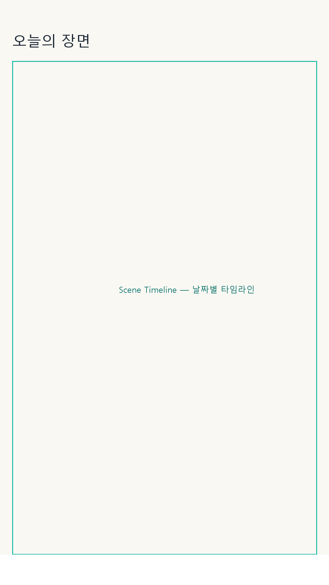
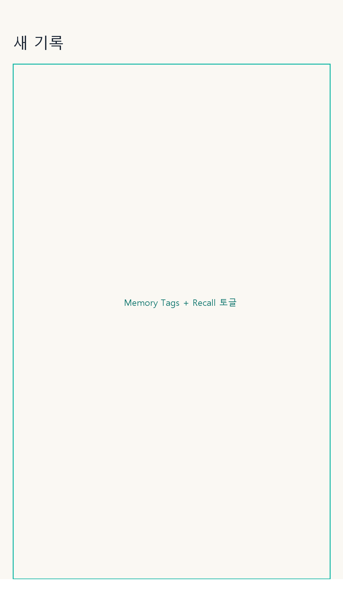
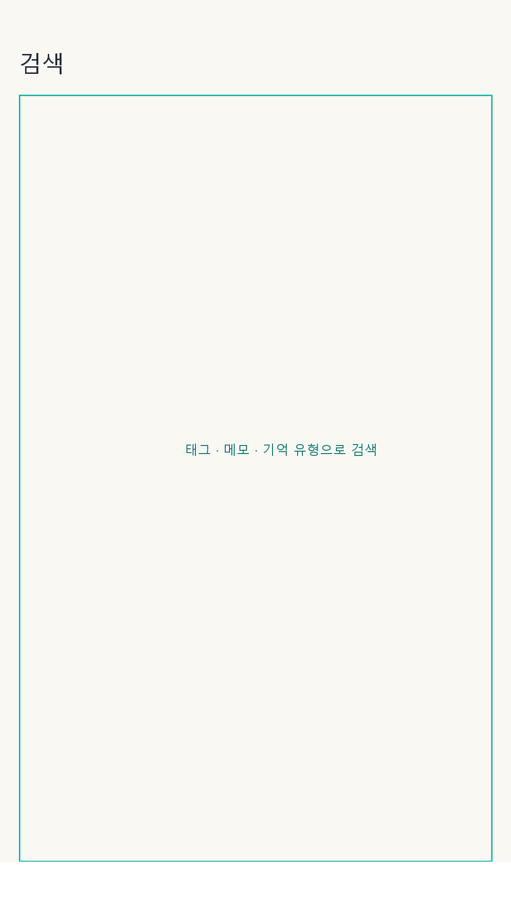
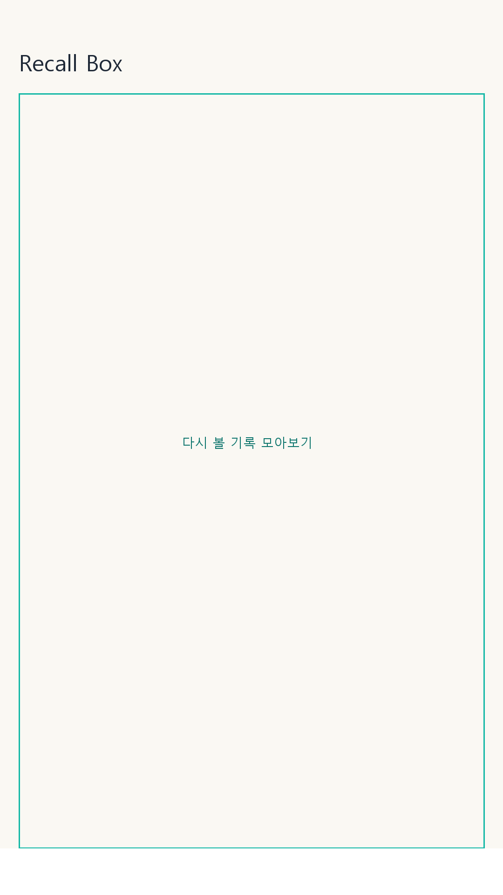

Today Timeline오늘의 장면부터 다시 보기까지
v2.6.4 기준 MarkScene은 Scene Timeline, 새 기록 작성, 검색, Recall Box와 로컬 VLM 고급 분석을 중심으로 사진 기록을 빠르게 쌓고 다시 찾는 흐름을 제공합니다.

Memory Tags
Fast Search
Recall Box검색 가능한 기억으로 바꾸는 기능
자동 태그는 시작점이고, 최종 기록은 사용자가 편집합니다. 사진, 태그, OCR, 메모, 기억 유형이 모두 로컬 검색의 단서가 됩니다.
전체 갤러리 스캔 없이 사용자가 고른 사진만 처리하고, 촬영 플로우는 CameraX 기반으로 동작합니다.
태그 초안과 텍스트 인식을 기기 안에서 처리해 API Key 없이도 핵심 기록 흐름을 사용할 수 있습니다.
태그, 제목, 메모, OCR 텍스트, 기억 유형을 빠르게 찾도록 로컬 DB와 검색 인덱스를 사용합니다.
다시 볼 기록을 따로 모으고, 주간 회고와 인기 태그로 기록의 흐름을 확인할 수 있습니다.
공유 템플릿, 이미지 크롭, Markdown/CSV 내보내기, EXIF 제거 옵션으로 기록 활용성을 높였습니다.
다운로드한 로컬 모델로 사진 검증, 장면 요약, 추천 태그를 만들고 결과는 수정 가능한 제안으로 표시합니다.
기본값은 로컬 우선
MarkScene은 사진 기록 앱이 다루는 정보가 민감할 수 있다는 전제에서 설계됩니다. 기본 기능과 로컬 AI 분석은 외부 AI 제공자 전송 없이 동작합니다.
- 기본 사진 가져오기는 Android Photo Picker를 우선합니다.
- MANAGE_EXTERNAL_STORAGE와 광범위한 사진/동영상 권한을 사용하지 않습니다.
- 외부 AI 분석용 API Key 입력을 제공하지 않습니다.
- 모델 다운로드 토큰, 사진 바이트, 프롬프트, AI 응답, 민감 정보는 로그에 남기지 않습니다.
프로젝트와 출시 준비 자료
소스, 릴리즈, 개인정보 처리방침, Play Store 준비 자료를 한곳에서 확인할 수 있습니다.